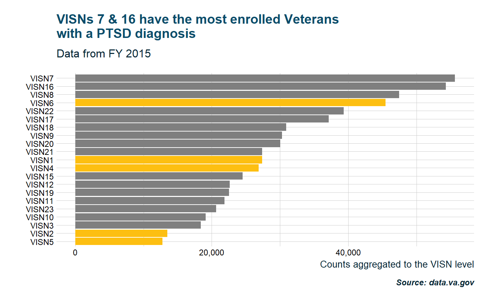
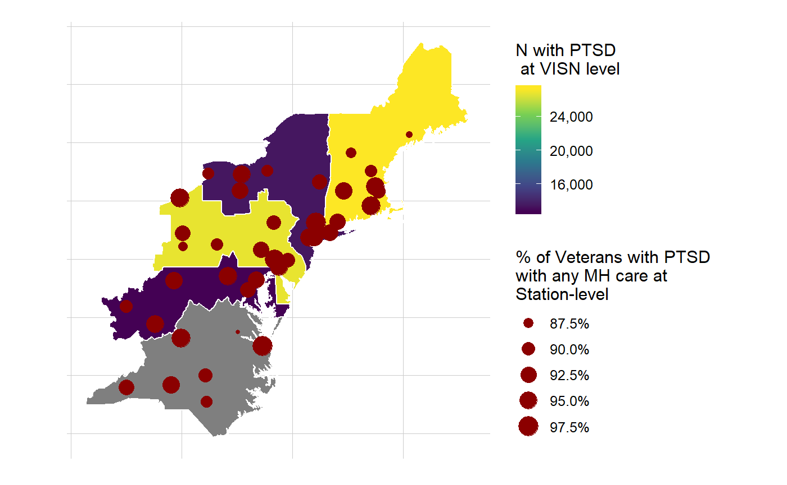

To get the most out of tidyVA data, it is best to also load the tidyverse package.
library(tidyverse)
#> Warning: package 'tidyverse' was built under R version 3.5.2
#> -- Attaching packages -------------------------------------------------------------------------- tidyverse 1.2.1 --
#> v ggplot2 3.1.0 v purrr 0.2.5
#> v tibble 1.4.2 v dplyr 0.7.8
#> v tidyr 0.8.2 v stringr 1.3.1
#> v readr 1.3.1 v forcats 0.3.0
#> Warning: package 'ggplot2' was built under R version 3.5.2
#> Warning: package 'tibble' was built under R version 3.5.2
#> Warning: package 'tidyr' was built under R version 3.5.2
#> Warning: package 'readr' was built under R version 3.5.2
#> Warning: package 'purrr' was built under R version 3.5.2
#> Warning: package 'dplyr' was built under R version 3.5.2
#> Warning: package 'stringr' was built under R version 3.5.2
#> Warning: package 'forcats' was built under R version 3.5.2
#> -- Conflicts ----------------------------------------------------------------------------- tidyverse_conflicts() --
#> x dplyr::filter() masks tidyVA::filter(), stats::filter()
#> x dplyr::lag() masks tidyVA::lag(), stats::lag()
library(tidyVA)
# load packaged data to environment
data("sector")
data("VAloc")ptsd <- jsonlite::fromJSON("https://www.data.va.gov/sites/default/files/NEPEC_Overview_PTSD_FY15.json",
"text", simplifyDataFrame = TRUE) %>% as.tibble()
ptsd$Value <- as.numeric(ptsd$Value)Lets highlight VISNs in the Northeastern and Mid-Atlantic regions and see how the numbers compare to other regions.
visn_data <- ptsd %>% filter(Category == "VISN-level Stats" & Item == "N with PTSD")
#> Warning: package 'bindrcpp' was built under R version 3.5.2
visn_data %>%
mutate(NEMA = case_when(Location %in% c("VISN1","VISN2","VISN4","VISN5","VISN6") ~ "yes",
!Location %in% c("VISN1","VISN2","VISN4","VISN5","VISN6") ~ "no")) %>%
ggplot(aes(reorder(Location, Value), Value, fill=NEMA)) +
geom_col() + coord_flip() +
scale_fill_manual(values = c("yes" = "#fdbf11", "no" = "gray50"), guide = FALSE) +
labs(x = "", y = "Counts aggregated to the VISN level", caption = "Source: data.va.gov") +
scale_y_continuous(labels = scales::comma) +
ggtitle("VISNs 7 & 16 have the most enrolled Veterans \nwith a PTSD diagnosis",
subtitle = "Data from FY 2015") +
theme_va()
Aggregate simple features to VISN level and merge to data frame
visn_geo <- sector %>% filter(VISN %in% c("01","02","04","05","06")) %>%
group_by(VISN) %>% summarise()
NEMA <- visn_data %>% filter(Location %in% c("VISN1","VISN2","VISN4","VISN5","VISN6")) %>%
mutate(VISN = case_when(Location == "VISN1" ~ "01", Location == "VISN2" ~ "02",
Location == "VISN4" ~ "04",Location == "VISN5" ~ "05",
Location == "VISN" ~ "06"))
visn <- left_join(visn_geo,NEMA, by = "VISN") Filter Health Administration from VAloc data
vha <- VAloc %>% filter(VAAdministration == "VHA") %>%
rename(Location = StationNumber) %>% select(Location, Shape)Filter station-level statistics from PTSD data. Merge to facilities simple features and subset locations in the Northeast and Mid-Atlantic based on spatial intersection.
sites <- ptsd %>% filter(Category == "Station-Level Stats" & Item == "% of Veterans with PTSD that received any MH care") %>% mutate(pct = Value /100)
sites <- left_join(sites,vha, by = "Location") %>%
st_as_sf() %>%
st_intersection(visn)
#> although coordinates are longitude/latitude, st_intersection assumes that they are planar
#> Warning: attribute variables are assumed to be spatially constant
#> throughout all geometriesThese data now include station-level statistics for % of Veterans with PTSD that received any MH care, location (facility) number, and a simple feature geometry for each site, as well as VISN-level data.
str(sites)
#> Classes 'sf', 'tbl_df', 'tbl' and 'data.frame': 40 obs. of 13 variables:
#> $ Category : chr "Station-Level Stats" "Station-Level Stats" "Station-Level Stats" "Station-Level Stats" ...
#> $ Item : chr "% of Veterans with PTSD that received any MH care" "% of Veterans with PTSD that received any MH care" "% of Veterans with PTSD that received any MH care" "% of Veterans with PTSD that received any MH care" ...
#> $ Location : chr "402" "405" "518" "523" ...
#> $ Value : num 86.2 87.8 95.2 90.2 88.8 ...
#> $ ValueType : chr "Percent" "Percent" "Percent" "Percent" ...
#> $ pct : num 0.862 0.878 0.952 0.902 0.888 ...
#> $ VISN : chr "01" "01" "01" "01" ...
#> $ Category.1 : chr "VISN-level Stats" "VISN-level Stats" "VISN-level Stats" "VISN-level Stats" ...
#> $ Item.1 : chr "N with PTSD" "N with PTSD" "N with PTSD" "N with PTSD" ...
#> $ Location.1 : chr "VISN1" "VISN1" "VISN1" "VISN1" ...
#> $ Value.1 : num 27363 27363 27363 27363 27363 ...
#> $ ValueType.1: chr "Number" "Number" "Number" "Number" ...
#> $ Shape :sfc_POINT of length 40; first list element: 'XY' num -69.7 44.3
#> - attr(*, "sf_column")= chr "Shape"
#> - attr(*, "agr")= Factor w/ 3 levels "constant","aggregate",..: NA NA NA NA NA NA NA NA NA NA ...
#> ..- attr(*, "names")= chr "Category" "Item" "Location" "Value" ...
ggplot() + geom_sf(data = visn, aes(fill = Value), color = NA) +
geom_sf(data = visn, fill = NA, color = "#ffffff") +
geom_sf(data = sites, fill = NA, color = "darkred",
aes(size = pct), show.legend = "point") +
scale_fill_viridis_c(labels = scales::comma) +
scale_size_continuous(labels = scales::percent) +
labs(fill = "N with PTSD \n at VISN level",
size = "% of Veterans with PTSD \nwith any MH care at \nStation-level") +
theme_va(map = TRUE)